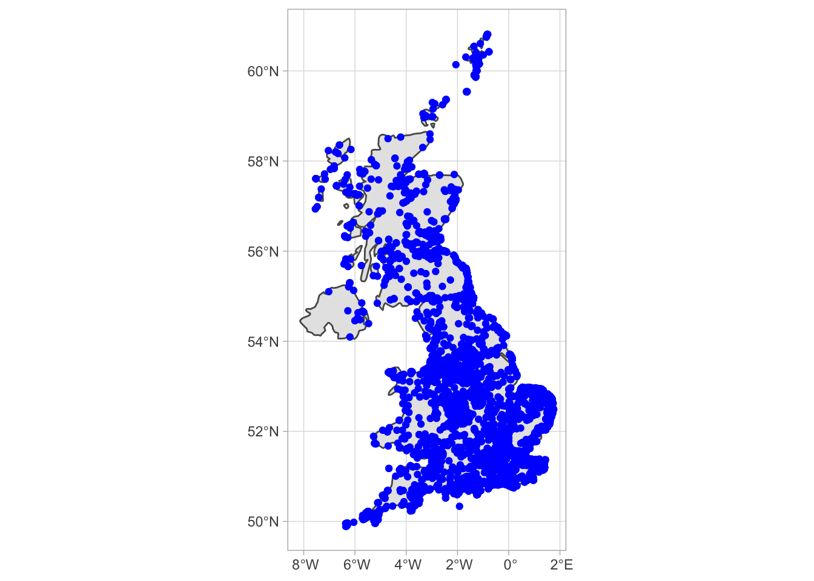

Last updated: 2021-11-22
Checks: 7 0
Knit directory: ebird_light_pollution/
This reproducible R Markdown analysis was created with workflowr (version 1.6.2). The Checks tab describes the reproducibility checks that were applied when the results were created. The Past versions tab lists the development history.
Great! Since the R Markdown file has been committed to the Git repository, you know the exact version of the code that produced these results.
Great job! The global environment was empty. Objects defined in the global environment can affect the analysis in your R Markdown file in unknown ways. For reproduciblity it’s best to always run the code in an empty environment.
The command set.seed(20211122) was run prior to running the code in the R Markdown file. Setting a seed ensures that any results that rely on randomness, e.g. subsampling or permutations, are reproducible.
Great job! Recording the operating system, R version, and package versions is critical for reproducibility.
Nice! There were no cached chunks for this analysis, so you can be confident that you successfully produced the results during this run.
Great job! Using relative paths to the files within your workflowr project makes it easier to run your code on other machines.
Great! You are using Git for version control. Tracking code development and connecting the code version to the results is critical for reproducibility.
The results in this page were generated with repository version d90caaa. See the Past versions tab to see a history of the changes made to the R Markdown and HTML files.
Note that you need to be careful to ensure that all relevant files for the analysis have been committed to Git prior to generating the results (you can use wflow_publish or wflow_git_commit). workflowr only checks the R Markdown file, but you know if there are other scripts or data files that it depends on. Below is the status of the Git repository when the results were generated:
Ignored files:
Ignored: .DS_Store
Untracked files:
Untracked: analysis/3_preparing_data_for_density_map.Rmd
Untracked: analysis/4_drawing_a_density_map.Rmd
Untracked: analysis/5_extracting_light_pollution_data.Rmd
Untracked: data/.here
Untracked: data/house_sparrow_test.txt
Note that any generated files, e.g. HTML, png, CSS, etc., are not included in this status report because it is ok for generated content to have uncommitted changes.
These are the previous versions of the repository in which changes were made to the R Markdown (analysis/2_make_a_simple_occurrence_plot.Rmd) and HTML (docs/2_make_a_simple_occurrence_plot.html) files. If you’ve configured a remote Git repository (see ?wflow_git_remote), click on the hyperlinks in the table below to view the files as they were in that past version.
| File | Version | Author | Date | Message |
|---|---|---|---|---|
| Rmd | d90caaa | markravinet | 2021-11-22 | add tutorial which uses data |
In this second tutorial, we will take the data we constructed in the first tutorial and use it to plot an occurrence map of the house sparrow Passer domesticus in the UK. Plotting like this is a useful exercise to verify that the data is what we think it is and also is a nice way to help ensure that we have a good idea of what we want to do with the data downstream. In order to achieve plotting in this way, we need to install some additional R packages, which is the focus of our first section.
To plot our map, we need to install and load some additional packages. These include sf which is used to work with spatial features in a simplified manner. The rnaturalearth packages which allow us to draw detailed maps and finally rgeos which is useful for drawing geometric objects. We install these packages like so:
install.packages("sf")
install.packages("rnaturalearth")
install.packages("rnaturalearthdata")
install.packages("rgeos")Once they are installed, use library to load them all and also don’t forget to load the tidyverse and auk packages. With these packages installed and loaded, we are ready to work towards building our plot.
The very first thing we need to do is load the data that we generated from the first tutorial. We can just read it in using read_ebd from awk like so
house <- read_ebd("./data/house_sparrow_test.txt", unique = TRUE, rollup = FALSE)Next we need to convert this object, which is currently a data.frame object into a spatial object. There is a rich amount of spatial data analysis in R and lots of resources online - see the end of the tutorial for more. Here we will use sf or ‘simple features’ a package that is designed to simplify using spatial data.
Have a look at the house data.frame you have read in. It has a lot of information and we do not need all of it here. First let’s simplify the data so that we can extract the columns containing the common name, the latitude and the longitude of the sampling site. We will do this using the select command from dplyr.
house %>%
dplyr::select(common_name, latitude, longitude)# A tibble: 97,611 × 3
common_name latitude longitude
<chr> <dbl> <dbl>
1 House Sparrow 54.7 -5.69
2 House Sparrow 54.0 -1.24
3 House Sparrow 54.7 -5.69
4 House Sparrow 50.7 -1.75
5 House Sparrow 54.7 -5.69
6 House Sparrow 53.4 -2.12
7 House Sparrow 53.2 -2.89
8 House Sparrow 54.7 -5.69
9 House Sparrow 55.2 -1.50
10 House Sparrow 52.7 1.41
# … with 97,601 more rowsRunning this line does exactly what we wanted - it extracts our selected columns. If you’re not familiar with %>%, it’s a pipe that basically sends the output of the house object to the select command. For more on this and other ways to use dplyr see here.
Now one thing you might notice is that this select command produces >97,000 observations. This is a lot and will be a nightmare to plot, so lets add another command which will subsample our data down to a fraction of its size.
house %>%
dplyr::select(common_name, latitude, longitude) %>%
sample_frac(0.1)# A tibble: 9,761 × 3
common_name latitude longitude
<chr> <dbl> <dbl>
1 House Sparrow 52.5 0.0444
2 House Sparrow 55.5 -4.62
3 House Sparrow 52.0 1.15
4 House Sparrow 55.0 -1.64
5 House Sparrow 51.6 -0.828
6 House Sparrow 53.3 -2.50
7 House Sparrow 55.6 -4.64
8 House Sparrow 55.8 -4.62
9 House Sparrow 55.6 -4.64
10 House Sparrow 53.1 -1.74
# … with 9,751 more rowsRunning this line, you can see that we’ve sampled our 97K dataset to a more manageable ~9,700 samples. Note that the identify of the rows will change each time you run this command because it randomly samples them each time. Try it multiple times and see the latitude and longitude values alter.
NB: when working with your own data, you may not need to run this. Here we subsampled the data simply because the house sparrow is so widespread, populous and common but if you were to work on an extremely rare species, like some of these sad examples you wouldn’t need to do so because there are fewer than 200 individuals and likely only a handful of sightings, if any.
Finally we need to run a command in order to convert from a data.frame to a spatial feature.
house %>%
dplyr::select(common_name, latitude, longitude) %>%
sample_frac(0.1) %>%
st_as_sf(coords = c("longitude", "latitude"), crs = 4236)Simple feature collection with 9761 features and 1 field
Geometry type: POINT
Dimension: XY
Bounding box: xmin: -7.600007 ymin: 49.89156 xmax: 1.756268 ymax: 60.8094
Geodetic CRS: Hu Tzu Shan 1950
# A tibble: 9,761 × 2
common_name geometry
* <chr> <POINT [°]>
1 House Sparrow (-4.636236 55.55115)
2 House Sparrow (-2.186861 53.46492)
3 House Sparrow (-1.962631 53.46515)
4 House Sparrow (-4.634349 55.54936)
5 House Sparrow (-5.20627 49.95964)
6 House Sparrow (0.0213718 52.92948)
7 House Sparrow (-2.964055 51.54284)
8 House Sparrow (-0.1479596 51.38058)
9 House Sparrow (-7.402477 57.18821)
10 House Sparrow (1.39432 51.15726)
# … with 9,751 more rowsHere the st_as_sf function identifies the latitude and longitude columns with the coords argument and then sets the coordinate reference system with crs.
With this done, we just need to ensure that we assign our command to an R object; here we’ll use house_sf. This is easily done like so:
house_sf <- house %>%
dplyr::select(common_name, latitude, longitude) %>%
sample_frac(0.1) %>%
st_as_sf(coords = c("longitude", "latitude"), crs = 4236)Now we have a spatial dataset that we are ready to plot.
In order to build a plot, we will use ggplot. There are multiple ways to plot maps in R and I will provide some further resources at the end of the tutorial. However in my opinion, this is the easiest and most logical approach.
Remember we are going to plot the occurrence of the house sparrow across the UK so in order to do this, we need to get a map of the UK. We do so using functions from the Rnaturalearth packages like so:
uk <- ne_countries(country = "united kingdom", scale = "medium", returnclass = "sf")Feel free to take a look at this object in R. As you will see, it is a polygon which can be drawn as a map. We can draw it like so:
map <- ggplot(data = uk) + geom_sf() + theme_light()
mapThis should be pretty recognisable as a map of the UK! Next we need to add our bird occurrence data. We have already built the basis of our plot with the ggplot commnand previously. ggplot has a logic that it allows you to build plots in layers. So in order to add our bird data, all we need to do is add a layer that contains the bird data as a spatial object. Here ggplot and sf interact nicely with the geom_sf function. For example:
map + geom_sf(data = house_sf, colour = "blue") + coord_sf()
And there we have it! A map of the UK with our subsampled point locations of house sparrow sightings. Next up, we’ll learn how to use this data to make predictions about bird density.
sessionInfo()R version 4.1.2 (2021-11-01)
Platform: x86_64-apple-darwin17.0 (64-bit)
Running under: macOS Catalina 10.15.7
Matrix products: default
BLAS: /Library/Frameworks/R.framework/Versions/4.1/Resources/lib/libRblas.0.dylib
LAPACK: /Library/Frameworks/R.framework/Versions/4.1/Resources/lib/libRlapack.dylib
locale:
[1] en_GB.UTF-8/en_GB.UTF-8/en_GB.UTF-8/C/en_GB.UTF-8/en_GB.UTF-8
attached base packages:
[1] stats graphics grDevices utils datasets methods base
other attached packages:
[1] forcats_0.5.1 stringr_1.4.0 dplyr_1.0.7
[4] purrr_0.3.4 readr_2.0.2 tidyr_1.1.4
[7] tibble_3.1.5 ggplot2_3.3.5 tidyverse_1.3.1
[10] rgeos_0.5-8 sp_1.4-5 rnaturalearthdata_0.1.0
[13] rnaturalearth_0.1.0 sf_1.0-3 auk_0.5.1
[16] here_1.0.1 workflowr_1.6.2
loaded via a namespace (and not attached):
[1] httr_1.4.2 bit64_4.0.5 vroom_1.5.5 jsonlite_1.7.2
[5] modelr_0.1.8 assertthat_0.2.1 highr_0.9 cellranger_1.1.0
[9] yaml_2.2.1 pillar_1.6.4 backports_1.3.0 lattice_0.20-45
[13] glue_1.5.0 digest_0.6.28 promises_1.2.0.1 rvest_1.0.2
[17] colorspace_2.0-2 htmltools_0.5.2 httpuv_1.6.3 pkgconfig_2.0.3
[21] broom_0.7.10 haven_2.4.3 s2_1.0.7 scales_1.1.1
[25] whisker_0.4 later_1.3.0 tzdb_0.2.0 git2r_0.28.0
[29] proxy_0.4-26 farver_2.1.0 generics_0.1.1 ellipsis_0.3.2
[33] withr_2.4.2 cli_3.1.0 magrittr_2.0.1 crayon_1.4.2
[37] readxl_1.3.1 evaluate_0.14 fs_1.5.0 fansi_0.5.0
[41] xml2_1.3.2 class_7.3-19 tools_4.1.2 hms_1.1.1
[45] lifecycle_1.0.1 munsell_0.5.0 reprex_2.0.1 compiler_4.1.2
[49] jquerylib_0.1.4 e1071_1.7-9 rlang_0.4.12 classInt_0.4-3
[53] units_0.7-2 grid_4.1.2 rstudioapi_0.13 rmarkdown_2.11
[57] wk_0.5.0 gtable_0.3.0 DBI_1.1.1 R6_2.5.1
[61] lubridate_1.8.0 knitr_1.36 bit_4.0.4 fastmap_1.1.0
[65] utf8_1.2.2 rprojroot_2.0.2 KernSmooth_2.23-20 stringi_1.7.5
[69] parallel_4.1.2 Rcpp_1.0.7 vctrs_0.3.8 dbplyr_2.1.1
[73] tidyselect_1.1.1 xfun_0.28